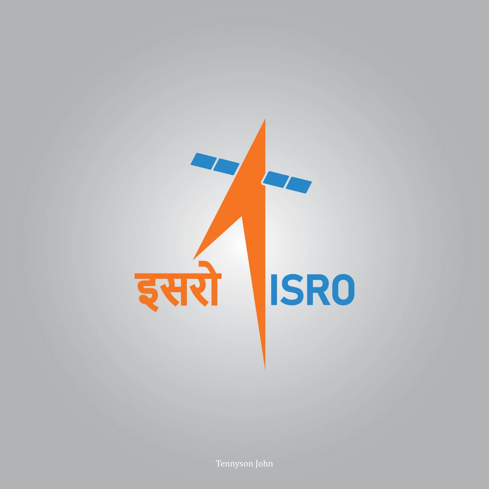

The Indian Space Research Organisation[a] (ISRO; /ˈɪsroʊ/) is the national space agency of India, headquartered in Bangalore. It operates under the Department of Space (DOS) which is directly overseen by the Prime Minister of India, while the Chairman of ISRO acts as the executive of DOS as well. ISRO is India's primary agency for performing tasks related to space-based applications, space exploration and the development of related technologies.[5] It is one of six government space agencies in the world which possess full launch capabilities, deploy cryogenic engines, launch extraterrestrial missions and operate large fleets of artificial satellites..
The Indian National Committee for Space Research (INCOSPAR) was established by Jawaharlal Nehru under the Department of Atomic Energy (DAE) in 1962, on the urging of scientist Vikram Sarabhai, recognising the need in space research. INCOSPAR grew and became ISRO in 1969, within DAE.[8] In 1972, the government of India set up a Space Commission and DOS, bringing ISRO under it. The establishment of ISRO thus institutionalised space research activities in India.[9][10] It since then has been managed by DOS, which governs various other institutions in India in the domain of astronomy and space technology.
